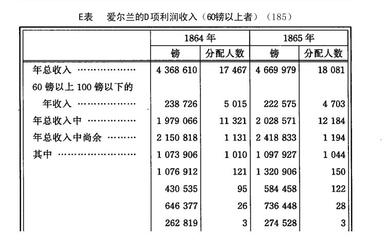

在结束本节时，我们还应该到爱尔兰去看一看。首先说一说与此有关的事实。
爱尔兰的人口，1841年曾达到8222664人，1851年减少到6623985人，1861年减少到5850309人，1866年减少到5500000人，即几乎减少到1801年的水平。人口减少是从饥荒的1846年开始的，此后不到20年的工夫，爱尔兰就失去了它的总人口的以上。(144)1851年5月到1865年7月，从爱尔兰移居国外的总人数为1591487人，而在1861年到1865年最近5年间移居国外的人口达500000人以上。住宅从1851年到1861年减少了52990座。从1851年到1861年，15—30英亩的租地农场增加61000个，30英亩以上的租地农场增加109000个，而全部租地农场的总数减少了120000个。可见，减少的原因完全是由于15英亩以下的租地农场不断消灭了，也就是说，它们不断集中了。
随着人口的减少，产品量总的来说自然也减少了。就我们的目的来说，只要考察一下1861年到1865年这5年就够了。这5年间，有500000以上的人口移居国外，绝对人口数减少了330000以上（见A表）。
根据上表可得出如下结果：
现在我们再来看看为牲畜和人提供生活资料的农业。下表中的各年度的数字是比上一年度减少或增加的数字。谷物包括小麦、燕麦、大麦、黑麦、菜豆和豌豆；蔬菜包括马铃薯、芜菁、甜萝卜、甜菜、白菜、胡萝卜、欧洲防风、野豌豆等等。
1865年，“草地”增加了127470英亩，这主要是由于“未开垦的荒地和泥沼地”减少了101543英亩。我们把1865年同1864年比较一下，则可以看到谷物减少了246667夸特，其中小麦减少48999夸特，燕麦减少166605夸特，大麦减少29892夸特，等等；马铃薯种植面积在1865年虽然有所增加，但是收获量却减少446398吨，等等（见C表）。
我们以上考察了爱尔兰的人口和农业生产的变动，现在再看一看爱尔兰地主、大租地农场主和工业资本家的财产的变动。这种变动反映在所得税的增减上。为了便于理解下面的D表，应当指出，D项（把租地农场主的利润除外的利润）也包括所谓“自由职业”的利润，即律师、医生等的收入，表内没有单独列出的C和E项则包括官吏、军官，领干薪的挂名官员、国债债权人等的收入。
从1853年到1864年，D项收入每年平均只增长0.93%，而同一时期在大不列颠该项收入每年平均却增长4.58%。下表表明1864年和1865年利润（租地农场主的利润除外）的分配情况。

英格兰是一个资本主义生产发达和工业占优势的国家，如果它的人口也像爱尔兰那样放血般地外流，它已失血而死。但是今天的爱尔兰仅仅是英格兰的一个被大海峡隔开的农业区，它为英格兰提供着谷物、羊毛、牲畜、工业新兵和军事新兵。
人口的减少使许多土地荒废，使农产品大大减少(145)，并且，尽管牧场面积扩大了，但是某些畜牧部门的生产绝对减少了，而在另外一些部门中，即使有一点微不足道的进步，也经常为退步所中断。然而，在人口减少的同时，地租和租地农场主的利润却继续增加，虽然后者的增加不像前者那样经常不断。原因是容易理解的。一方面，随着租地农场集中和耕地转化为牧场，总产品中越来越大的部分转化为剩余产品。虽然总产品减少了，但是构成其中一部分的剩余产品增加了。另一方面，这些剩余产品的货币价值比它们的数量增长得更快，因为最近20年来，特别是最近10年来，肉类、羊毛等等的英格兰市场价格不断地上涨了。
正如生产者所消费的他自己的产品不是商品一样，充当生产者本身的就业手段和生存资料而不合并他人劳动以自行增殖的分散的生产资料，也不是资本。随着人口的减少，用在农业上的生产资料量也减少了，但是用在农业上的资本量却增加了，因为从前分散的生产资料中的一部分转化为资本了。
爱尔兰用在农业以外即投入工商业的总资本，在最近20年间积累得很缓慢，而且处在经常不断的大波动之中。相反地，这个总资本的各个组成部分的积聚却发展得越来越快了。最后，尽管它的绝对增长量很小，但是相对地说，即同已经减少的人口比较起来，它还是增大了。
因此，这里在我们眼前大规模地展开了一个过程。正统的经济学不能指望有比这个过程更美好的东西可用来证实他们的教条了。按照他们的教条，贫困是由绝对的人口过剩产生的，减少人口才能够恢复平衡。这是同马尔萨斯信徒所极力赞美的14世纪中叶的鼠疫完全不同的另一重要实验。顺便指出，把14世纪的尺度应用到19世纪的生产关系和相应的人口关系上来，这本身就是一种学究式的天真，况且这种天真的做法还忽略了一个事实：随那次鼠疫以及由此发生的人口大量减少之后，在海峡此岸的英格兰接踵而来的固然是农村人口的解放和致富，但在海峡彼岸的法兰西随之而来的却是更加残酷的奴役和更大的贫困。(146)
爱尔兰1846年的饥荒毁灭的人超过一百万，然而全是穷人。饥荒没有使该国的财富遭受丝毫损失。此后20年不断扩大的人口外流，不像三十年战争那样，在减少人数的同时也减少了他们的生产资料。爱尔兰的天才发明了一种崭新的方法，像行妖术一样把穷人从他们的贫困之境送到数千里之外。迁往北美合众国的移民，逐年寄回家一笔钱，给留下来的人做旅费用。今年迁出去的一批人会在明年带走另外一批人。这样一来，向国外移民不仅不需要爱尔兰花费什么，反而成了它的出口业中最能获利的部门之一。最后，这种向国外移民又是一个有组织的过程，它不只是暂时地为人口钻开一个出口，而是使每年从人口中吸走的人数多于新生的人数，结果是绝对人口水平年复一年地下降。 (147)
那些得以避免成为过剩人口而留下来的爱尔兰工人的结局又是怎样的呢？目前的相对过剩人口同1846年以前一样庞大；工资同样很低，劳动的折磨更重；农村的贫困再一次逼近新的危机。原因很简单。农业革命和向国外移民保持同一步伐。相对过剩人口的生产比人口的绝对减少更快。看一下B表就可以知道，在爱尔兰，耕地转化为牧场必然比在英格兰发生更加强烈的作用。在英格兰，随着畜牧业的发展，蔬菜的生产也发展了，而在爱尔兰却减少了。从前的大片耕地转化为休耕地或永久的草地，而同时一大部分从前未开垦的荒地和泥沼地被用来扩大畜牧业。中小租地农场主——我把耕地不超过100英亩的租地农场主全都计算在内——仍然约占总数的(148)他们越来越受到资本主义农业生产的竞争的空前压迫而被挤垮，因此不断地为雇佣工人阶级提供新兵。爱尔兰惟一的大工业，亚麻加工业，需要的成年男工比较少，虽然自从1861年到1866年棉花涨价以来这种工业扩大了，但总的来说，它只雇用居民中较小的一部分人。像所有其他大工业一样，它由于在本部门内不断发生波动而不断地生产出相对过剩人口，即使在它吸收的人数绝对增加的情况下也是如此。农村居民的贫困成为巨大的衬衫厂等等的基础，这类工厂的劳动大军大部分散布在农村中。在这里，我们又一次碰到前面曾经叙述过的家庭劳动制度。(149)低工资和过度劳动是这种制度“生产过剩人口”的系统的手段。最后，人口的减少虽然没有带来像它在一个资本主义生产发达的国家所带来的那样破坏性后果，但是也不能不对国内市场产生经常的反作用。国外移民现象在这里所造成的空隙，不仅使地方性的劳动需求缩小了，而且也使小店主、手工业者，总之，一切小企业主的收入减少了。E表内60—100镑之间收入的减少，就是由于这种原因。
关于爱尔兰农业短工的状况，在爱尔兰济贫法视察员的报告（1870年）(150)中叙述得很清楚。这些视察员既然供职于一个只有靠刺刀，靠时而公开时而隐蔽的戒严状态才得以维持的政府，在措辞上不得不十分审慎，而这是他们的英格兰的同僚们所不齿的。尽管如此，他们也没有让他们的政府沉湎于幻想。据他们说，农村中工资率至今仍然很低，可是最近20年来已经提高了50—60%，现在每周平均是6—9先令。但是在这种表面提高的背后，隐藏着工资的实际降低，因为工资的提高并没有和同一时期必要生活资料的涨价保持平衡；从爱尔兰某个贫民习艺所的官方报告中摘引的如下数字就可作证。
可见，同20年前比较，必要生活资料的价格几乎上涨了一倍，而衣类的价格恰好上涨一倍。
即使撇开这种不平衡不说，只是比较用货币表示的工资率，也远不能得出正确的结论。在饥荒以前，农村的工资大部分是用实物支付的，用货币支付的只是极小一部分；而今天，用货币支付已经是通例了。由此就可以得出结论：不管实际工资如何变动，货币工资率必然提高。
“饥荒以前，农业短工还有一小块土地，用来种植马铃薯，饲养猪和家禽。现在，他不仅要购买一切生活资料，而且连出卖猪、家禽和蛋类所得的收入也丧失了。”(151)
从前，农业工人实际上又是小租地农民，他们大多只是中等农场和大农场的后卫部队，在这些农场里找些活干。只是在1846年的灾荒以后，他们才开始构成纯粹雇佣工人阶级的一部分，构成一个同他们的雇主只发生货币关系的特殊阶层。
我们已经知道1846年以前农业工人的居住状况是怎样的。从那以后，他们的居住状况更糟了。一部分农业短工尽管人数日益减少，仍然居住在租地农场主土地上的拥挤不堪的小屋里，这种住处的可怕情景远远超过了英格兰各农业地区最坏的居住情况。除了阿尔斯特的某些地区以外，到处都是如此：南部有科克、利默里克、基尔肯尼等郡；东部有威克洛、韦克斯福德等郡；中部有国王郡、女王郡、都柏林等郡；北部有唐郡、安特里姆、蒂龙等郡；西部有斯莱戈、罗斯康芒、梅奥、戈尔韦等郡。一个视察员感慨地说：“这简直是宗教和我国文明的耻辱。”(152)为了使短工们的洞窟生活可以过得去些，那些自古以来就附属于住宅的小块土地也被系统地没收了。
“由于意识到是地主及其管家使他们受到这种非人待遇，农业短工对那些把他们当作无权人种看待的人，产生了一种相应的对抗情绪和憎恨心理。”\f
农业革命的第一个行动，就是以极大的规模，像奉天之命一样，拆除耕地上的那些小屋。因此，许多工人不得不到村镇和城市里去寻找栖身之所。在那里，他们就像废物一样被抛进阁楼，洞窟，地下室和最糟糕的街区的屋角里。爱尔兰人素来以罕有的眷恋乡土之情、开朗的性格和纯正的家风而著称，这是连抱有民族偏见的英格兰人也承认的，可是现在，成千上万个这样的爱尔兰家庭突然被移植到罪恶的温室中来了。男人们现在必须到邻近的租地农场主那里找寻工作，并且只能按日被雇用，因而工资收入极不稳定；同时，
“他们现在不得不在往返农场的路上长途跋涉，途中时常被雨淋透，还要吃到别的苦头，结果往往引起身体虚弱、疾病，从而引起贫困”(153)。
“城市不得不年年收纳农业地区中被认为是过剩的工人”(154)，可是令人奇怪的是，“城镇中工人过剩，而农村中则到处工人不足！”(155)实际情形是，只有“在春秋农忙季节”才感到工人不足，“而在其余季节，很多人都闲着没事干”(156)；“秋收以后，从10月到翌年开春，他们几乎找不到什么工作”(157)；甚至在干活的季节，“他们也经常一连几天没事干，并且他们的工作还经常发生各种各样的中断”(158)。
农业革命——耕地转化为牧场，采用机器，最严格的节约劳动等等——所引起的这些后果，被那些不在国外挥霍地租而甘愿住在爱尔兰本人领地内的模范地主们弄得更加严重了。为了使供求规律完全不受损害，这班老爷们
“现在几乎完全是从他们的小租地农民那里取得他们所需要的全部劳动，小租地农民这样就不得不为他们的地主做苦工，而工资通常比普通短工还要低。至于在播种或收割的紧急时刻，他们被迫搁下自己的田地而招致许多不便和损失，那就更不用说了”(159)。
可见，就业的没有保障和不稳定，窝工现象的频繁发生和长期持续——所有这一切相对人口过剩的征候，都在济贫所视察员的报告中作为爱尔兰农业无产阶级的苦难列举出来了。我们记得，在英格兰农业无产阶级中我们已经看到过类似的现象。不过，不同的是，在工业国的英格兰，工业后备军是从农村得到补充，而在农业国的爱尔兰，农业后备军则是从城市，即被驱逐的农业工人的避难所得到补充。在英格兰，过剩的农业工人转化为工厂工人，而在爱尔兰，被驱逐到城市里去的农业工人，虽然对城市的工资形成压力，但仍然是农业工人，并不断地被送回农村去找活干。
官方报告的起草人对农业短工的物质状况作了如下的概述：
“虽然他们的生活极端俭朴，但是他们的工资只能勉勉强强应付他们自己及其家属吃住之用。要做衣服，他们得有另外的收入……他们的居住环境，加上其他方面的困苦，使得这个阶级特别容易感染伤寒和肺结核。”(160)
这就无怪报告起草人都异口同声地证明，阴郁的不满情绪笼罩着这个阶级的行列，他们留恋过去，厌恶现在，绝望于将来，“受到煽动者的有害影响”，并且只有一个固执的想法：移居美洲。这就是伟大的马尔萨斯的万应灵药——减少人口，已经把绿色埃林(161)变成了多么幸福的乐土！
爱尔兰的工业工人又是过着怎样幸福的生活呢？举一个例子就可以说明。
英格兰工厂视察员罗伯特·贝克说：
“我最近视察爱尔兰北部的时候，看到一个熟练的爱尔兰工人靠自己少得可怜的收入尽力使自己的孩子受教育，这件事使我深为惊讶。我把他亲口所说的话逐字逐句地写在下面。只要我说出他是被雇用来为曼彻斯特市场制造商品的，人们就会知道他是一个熟练的工厂工人。约翰逊说：我是一个捶布工，从星期一到星期五，都是从早晨6点钟干到夜里11点；星期六干到下午6点，有3个钟头的吃饭和休息时间。我有5个孩子。我干这种活每周收入10先令6便士；我的妻子也做工，每周挣5先令。大女儿12岁，料理家务。她是我们的厨师和惟一的帮手。她照料弟妹上学。我的妻子和我同时起床上工。有一个小姑娘每天经过我家门口，她在早晨5点半钟把我叫醒。我们什么也不吃就去上工。白天，12岁的女儿照顾弟妹。我们在8点钟回家吃早饭。我们每周只喝一次茶；我们平时喝粥，有时是燕麦片粥，有时是玉米面粥，这要看我们能买到什么了。冬天，我们往玉米面里加一点糖和水。夏天，我们收点马铃薯，那是我们在一小块地上自己种的；马铃薯吃完了，还得喝粥。不管星期日也好，平日也好，一年到头就是这样过日子。晚上下工以后，我总是感到非常疲乏。我们偶尔也能见到一小块肉，但那是太难得了。我们有3个孩子上学，每人每周要花费1便士。我们的房租每周9便士，泥炭和燃料每两周至少要1先令6便士。”(162)
这就是爱尔兰的工资，这就是爱尔兰的生活！
事实上，爱尔兰的贫困又成了英格兰当前的话题了。1866年底和1867年初，有一个叫达弗林侯爵的爱尔兰大地主，曾经在《泰晤士报》上着手讨论解决这个问题。“这位伟大的至尊多么仁慈啊！”[456]
我们从E表可以看出，1864年，3个谋利者从总利润4368610镑中只捞去262819镑，而1865年，同是这3位大“禁欲家”就从总利润4669979镑中捞去274528镑；1864年，26个谋利者得到646377镑，1865年，28个谋利者得到736448镑；1864年，121个谋利者得到1076912镑，1865年，150个谋利者得到1320906镑；1864年，1131个谋利者得到2150818镑，几乎占全年总利润的一半，1865年，1194个谋利者得到2418833镑，超过全年总利润的一半。可是，英格兰、苏格兰和爱尔兰的一小撮大地主从每年国民地租总额中吞掉的数额是如此庞大，以致英国的治国明哲认为，关于地租的分配不宜于提出像利润分配这样的统计资料。达弗林侯爵就是这些大地主中的一个。说地租和利润会在某个时候“过多”，或者说地租和利润的过多同人民的过于贫困有某种联系，这当然是既“不体面”又“不健全的”概念。侯爵依据的是事实。事实是，爱尔兰人口减少了，而爱尔兰的地租却增长了；人口减少对土地所有者“有利”，从而对土地以及仅仅是土地附属品的人民也“有利”。于是，侯爵宣告，爱尔兰的人口仍然过剩，人口外流仍然太慢。要想享有十足的幸福，爱尔兰至少还应该排出30多万工人。桑格拉都学派的医生见病人没有起色，就让放血，再放血，直到病人的血放完了，病也就没了。我们不要以为这位还很富有诗意的侯爵是个桑格拉都学派的医生。他只是要求再放30多万人的血而不是大约200万。但是事实上要想在埃林建立起千年王国，非得放出大约200万人的血不可。证据是不难提出的。
1851年到1861年间的集中所消灭的主要是前三类1英亩以下至15英亩的租地农场。这些农场必然首先消灭。结果就产生了307058户“过剩”的租地农民，作一个低的估计，每家平均4口人，总人数就是1228232人。即使作一夸大的假定，假定农业革命完成后，其中的将再度被吸收，结果仍须有921174人移居国外。16至100英亩的4、5、6三类租地农场，用来经营资本主义的谷物生产也嫌太小，至于用来牧羊，就简直等于零，这是我们在英格兰早就知道的了。因此，在上述同样的假定下，又得有788358人移居国外，结果总人数就是1709532人。既然胃口越来越大，[457]地主们的眼睛立刻会发现，具有350万人口的爱尔兰仍然贫困，而所以贫困，是因为人口过剩，因此，它必须更进一步大力减少人口，才能完成它作为英格兰的一个牧羊场和放牧场的真正使命。(163)
这个有利可图的方法，正像这个世界上一切美好的事物一样，也有它的缺陷。随着地租在爱尔兰不断积累，爱尔兰人在美洲也以同一步伐不断积累。被羊和牛挤走的爱尔兰人作为芬尼社社员[459]崛起于大洋彼岸了。年青的大共和国面对年老的海上女皇越来越带威胁性地昂起头来。
严酷的命运，兄弟互相残杀的罪孽，使罗马人受尽了苦难。[460]
(1) 卡尔·马克思《雇佣劳动与资本》。——“在群众受压迫的程度相同的情况下，一个国家的无产者越多，这个国家就越富。”（科兰《政治经济学。革命及所谓社会主义乌托邦的起源》1857年巴黎版第3卷第331页）“无产者”在经济学上只能理解为生产和增殖“资本”的雇佣工人，只要他对“资本先生”（贝魁尔对这种人的称呼）的价值增殖的需要成为多余时，就被抛向街头。“原始森林中的病弱的无产者”是罗雪尔的奇妙的幻想。原始森林人是原始森林的所有主，他像猩猩一样毫不客气地把原始森林看作自己的财产。可见，他不是无产者。只有在原始森林剥削他，而不是他剥削原始森林时，他才是无产者。至于他的健康状况，那么，不仅完全可以同现代无产者的健康状况相比，而且也可以同患梅毒的和患瘰疬病的“上流人士”的健康状况相比。不过，威廉·罗雪尔先生所说的原始森林，大概是指他的家乡吕讷堡的灌木林吧。
(2) 见本卷第691—701页。——编者注
(3) 见本卷第680—699页。——编者注
(4) 约翰·贝勒斯《关于创办一所一切有用的手工业和农业的劳动学院的建议》1696年伦敦版第2页。
(5) 贝·曼德维尔（《蜜蜂的寓言》1728年伦敦第5版附注第212、213、328页）——“有节制的生活和不断的劳动，对于穷人来说，是通向物质幸福〈他是指尽可能长的工作日和尽可能少的生活资料〉的道路，而对于国家〈即地主、资本家和他们的政界显贵与代理人〉来说，是通向富裕的道路。”（《论手工业和商业》1770年伦敦版第54页）
(6) 伊登应当问一下：“市民制度”又是谁的创造物？他从法律幻想的观点出发，不是把法律看作物质生产关系的产物，而是相反，把生产关系看作法律的产物。兰盖只用“法的精神就是所有权”[428] 这样一句话，就把孟德斯鸠幻想的“法的精神”推翻了。
(7) 伊登《贫民的状况，或英国劳动者阶级的历史》第1卷第1篇第1章第1，2页和序言第ⅩⅩ页。
(8) 假如读者想提醒我们不要忘了1798年发表《人口原理》的马尔萨斯，那我也要提醒你们：他这本书最初的版本不过是对笛福、詹姆斯·斯图亚特爵士、唐森、富兰克林、华莱士等人的小学生般肤浅的和牧师般拿腔做调的剽窃，其中没有一个他独自思考出来的命题。这本小册子所以轰动一时，完全是由党派利益引起的。法国革命在不列颠王国找到了热情的维护者；“人口原理”是在18世纪逐渐编造出来的，接着在一次巨大的社会危机中被大吹大擂地宣扬为对付孔多塞等人学说的万无一失的解毒剂，英国的寡头政府认为它可以最有效地扑灭一切追求人类进步的热望，因而报以热情的喝彩。马尔萨斯对自己的成功大为惊奇，于是着手把一些表面地拼凑起来的材料塞进原来的模型中去，又添加了点新东西，不过这些东西不是马尔萨斯发现的，而只是被他据为己有的。——顺便提一下，马尔萨斯虽然是英国国教高教会派的牧师，但他曾立过修道士终身不婚的誓言。这正是取得新教派的剑桥大学的研究员资格的条件之一。“已婚者不得成为本委员会会员。谁一旦娶妻，即不再为会员。”（《剑桥大学委员会报告》第172页）这种情况使马尔萨斯区别于其他新教牧师而处于有利的地位，因为其他新教牧师抛弃了天主教关于教士终身不婚的圣诫，并且力言“要生养众多”[429] 是他们特有的圣经上规定的使命，以致到处为人口的增殖作出极不体面的贡献，而同时却又向工人宣讲“人口原理”。能说明问题的是：经济学上拙劣地仿造出来的原罪，亚当的苹果，“迫不及待的情欲”，唐森牧师风趣地称之为“要把邱比特的箭弄钝的各种障碍”——这个微妙的问题过去和现在都是由新教神学或不如说新教教会的老爷们所垄断。除了威尼斯的僧侣奥特斯这位有创见有才智的著作家外，大多数人口论者都是新教牧师。例如：布鲁克纳，他1767年在莱顿出版的《动物界论》一书详尽无遗地论述了整个现代人口理论，而该书的思想是由魁奈同自己的学生老米拉波对这一题目的一次短暂争论所提供的[430] ，后来是华莱士牧师、唐森牧师、马尔萨斯牧师及其学生托·查默斯大牧师，至于这一派的一些次要的牧师文人，那就根本不用谈了。最初研究政治经济学的，是像霍布斯、洛克、休谟一类的哲学家，以及像托马斯·莫尔、坦普尔、苏利、德·维特、诺思、罗、范德林特、康替龙、富兰克林一类的实业家和政治家，而特别在理论方面进行过研究并获得巨大成就的，是像配第、巴尔本、曼德维尔、魁奈一类的医生。甚至在18世纪中叶，一位当时著名的经济学家，牧师塔克尔先生，还曾为他自己研究钱财而进行过辩解。后来，正是随着“人口原理”的出现，新教牧师的时钟响了。把人口看作财富的基础，并且和亚当·斯密一样是牧师们不可调和的敌人的配第，似乎预料到了这些拙劣的插手，他说道：“教士最守苦行时，宗教最繁荣，正如在律师饿死的地方，法律最昌明一样”。因此，配第劝告新教的牧师们：如果你们不愿再追随使徒保罗，不愿终身不婚来“禁欲”，“至少不要生出多于现有牧师俸禄所能吸收的牧师，也就是说，在英格兰和威尔士只有12000份牧师俸禄的时候，要是生出24000个牧师，那是不明智的，因为12000个无以为生的人总要设法自谋生计。为此他们走向民间，向人们游说：那12000个受俸牧师在毒害人们的灵魂，使这些灵魂饿死，把他们引入歧途而无法升入天国。除了这样做而外，难道还能有什么别的更容易谋生的方法吗？”（配第《赋税论》1667年伦敦版第57页）亚当·斯密对当时新教牧师的态度可以从下面这件事看出来。在《给法学博士亚当·斯密的一封信，论他的朋友大卫·休谟的生平和哲学》（一位称作基督徒的人著，1784年牛津第4版）这一著作中，诺里奇的高教会派主教霍恩博士责难亚·斯密，因为斯密在一封致斯特拉恩先生的公开信中要使自己的“朋友大卫〈即休谟〉不朽”，因为斯密向公众讲述，“休谟在他临终的床上以读琉善的作品和玩惠斯特牌而自娱”，甚至胆敢写道：“无论在休谟生前或死后，我始终认为，他在人类天性的弱点所允许的范围内，接近了一个理想的全智全德的人。”这位主教愤怒地叫喊道：“先生，您向我们把一个不可救药地反对一切叫作宗教的东西并且竭尽全力甚至要使宗教这个名称也从人们的记忆中消失的人的性格和品行，描绘成全智全德的，您这样做合适吗？”（同上，第8页）“但是，热爱真理的朋友们，不要气馁，无神论是长久不了的。”（第17页）亚当·斯密“抱着残忍的恶意，要在全国宣扬无神论〈就是通过他的《道德情操论》〉……博士先生，我们了解您的诡计！您想得倒好，但是这一次却失算了。您想用大卫·休谟先生的例子来使我们相信，无神论对于意志沮丧的人来说是惟一的兴奋剂，是对付死亡恐怖的惟一的解毒剂……您去笑那废墟中的巴比伦吧！去祝贺那无情的恶魔法老吧！”（同上，第20、21、22页）在亚·斯密的学生中，一个正统派在亚·斯密死后写道：“斯密对休谟的友谊妨碍他成为一个基督徒……他相信休谟的每一句话。即使休谟对他说，月亮是一块绿色的干酪，他也会相信。所以，休谟说没有上帝，没有奇迹，他也同样相信……斯密在政治原则上接近于共和主义。”詹姆斯·安德森《蜜蜂》1791—1793年爱丁堡版，共18卷，第3卷第166、165页）托·查默斯牧师曾怀疑，亚·斯密捏造出“非生产工人”这个范畴纯粹是出于恶意，是专门用来影射新教牧师的，虽然牧师们在上帝的葡萄园中也进行了幸福的劳动。[431]
(9) 第2版注：“但是，不论工业工人还是农业工人，他们就业的界限是一致的，那就是雇主能够从他们的劳动产品中榨取利润。如果工资率过高，使雇主的利润降低到平均利润以下，那么，雇主就会不再雇用他们，或者只有在他们答应降低工资的条件下才会继续雇用他们。”（约翰·威德《中等阶级和工人阶级的历史》1835年伦敦第3版第240页）
(10) 见本卷第617—622页。——编者注
(11) 参看卡尔·马克思《政治经济学批判》第165页及以下几页[433] 。
(12) “如果回头来看看我们在最初研究时曾经指出的……资本本身不过是人的劳动的产物……那么似乎完全不能理解的是，人怎么会落入他自己的产物——资本——的统治下，并且从属于这个产物；然而，因为实际上情况确实如此，所以不禁要问：工人作为资本的创造者，怎么会由资本的主人变为资本的奴隶呢？”（冯·杜能《孤立国家》1863年罗斯托克版第2卷第2部分第5、6页）杜能的功绩在于提出了问题。他的回答却十分幼稚。
(13) 见本卷第701—702页。——编者注
(14) 见本卷第374—389页。——编者注
(15) 见本卷第356—358页。——编者注
(16) 〔第4版注：英美两国最新的“托拉斯”已经在为这一目标而奋斗，它们力图至少把一个生产部门的全部大企业联合成一个握有实际垄断权的大股份公司。——弗·恩·〕
(17) 〔第3版注：在马克思的自用本上，此处有如下的边注：“为了以后备考，这里应当指出：如果扩大只是量上的扩大，那么同一生产部门中，较大和较小资本的利润都同预付资本的量成比例。如果量的扩大引起了质的变化，那么，较大资本的利润率就会同时提高”。——弗·恩·〕
(18) 见本卷第718—719页。——编者注
(19) 第3版和经恩格斯审校的英文版中是：集中。——编者注
(20) 英格兰和威尔士的人口调查表明：
全体从事农业的人员（土地所有者、租地农场主、园丁、牧人等等都包括在内）1851年为2011447人，1861年为1924110人，减少87337人。毛织厂——1851年为102714人，1861年为79242人；丝织厂——1851年为111940人，1861年为101678人；印染工人——1851年为12098人，1861年为12556人，虽然生产大为扩大，但人数增加很少，这就意味着就业工人人数相对地大为减少。制帽工人——1851年为15957人，1861年为13814人；草帽及便帽工人——1851年为20393人，1861年为18176人；麦芽工人——1851年为10566人，1861年为10677人；蜡烛工人——1851年为4949人，1861年为4686人，人数减少的原因之一是煤气灯的增多。制梳工人——1851年为2038人，1861年为1478人；锯木工人——1851年为30552人，1861年为31647人，由于锯木机的推广，人数增加很少；制钉工人——1851年为26940人，1861年为26130人，人数减少是由于机器的竞争；锡矿和铜矿工人——1851年为31360人，1861年为32041人。相反，棉纺织业——1851年为371777人，1861年为456646人；煤矿——1851年为183389人，1861年为246613人。“一般说来，1851年以来，工人人数的增加在那些直到现在还没有成功地采用机器的部门最为显著。”（《1861年英格兰和威尔士人口调查》1863年伦敦版第3卷第36页）
(21) 可变资本相对量递减的规律和这个规律对雇佣工人阶级状况的影响，曾经被古典学派某些优秀的经济学家感觉到，但是没有被他们所理解。在这方面，最大的功绩应归于约翰·巴顿，虽然他同所有其他的人一样，把不变资本同固定资本混为一谈，把可变资本同流动资本混为一谈。他说：“对劳动的需求取决于流动资本的增加，而不是取决于固定资本的增加。如果这两种资本的比例在任何时候和在任何情况下确实都是一样的话，那么由此的确可以得出结论说，就业工人的人数同国家的财富成比例。但是这种假定并不符合现实。随着技术的进步和文明的传播，固定资本与流动资本相比越来越大。英国生产一匹凡尔纱所使用的固定资本额至少等于印度生产同样一匹凡尔纱所使用的固定资本额的一百倍，也许是一千倍。而流动资本的份额则是百分之一或千分之一……如果把一年的全部积蓄都加到固定资本上去，也不会使劳动的需求有任何增长。”（约翰·巴顿《论影响社会上劳动阶级状况的环境》1817年伦敦版第16、17页）“使国家的纯收入增加的原因，同时可以使人口过剩和使工人状况恶化。”（李嘉图《政治经济学和赋税原理》第469页）随着资本的增加，“〈对劳动的〉需求会相对地减少”（同上，第480页注）。“用来维持劳动的资本额可以不依赖于资本总额的变化而发生变化…… 随着资本本身越来越雄厚，就业规模的大波动以及大贫困变得越来越频繁。”（理查·琼斯《政治经济学绪论》1833年伦敦版第52页）“〈对劳动的〉需求的提高……并不是同总资本的积累成比例的…… 因此，在社会进步的过程中，用于再生产的国民资本的每次增加，对工人状况的影响会越来越小。”（拉姆赛《论财富的分配》第90、91页）
(22) 赫·梅里韦尔《关于殖民和殖民地的演说》1841—1842年伦敦版第1卷第146页。
(23) 马尔萨斯《政治经济学原理》第215、319、320页。在这本书中，马尔萨斯依靠西斯蒙第终于发现了资本主义生产的美妙的三位一体：生产过剩，人口过剩，消费过剩，实在是三个极美妙的怪物！参看弗·恩格斯《国民经济学批判大纲》第107页及以下几页[435] 。
(24) 哈丽雅特·马蒂诺《曼彻斯特的罢工》1832年版第101页。
(25) 见本卷第460—480页。——编者注
(26) 见本卷第453—463页。——编者注
(27) 甚至在1863年棉荒时期，我们在布莱克本的纺纱工人散发的一本小册子中，也看到对过度劳动的强烈指责。由于工厂法的约束，从事这种过度劳动的当然只有成年男工。“这个工厂要求成年工人每天劳动12—13小时，虽然有成百的人被迫无事可做，而他们又愿意劳动一部分时间，以便养家活口和防止自己的工人弟兄因过度劳动而早死。”小册子接着说：“我们要问，进行额外时间的劳动这种做法，能使主人和‘仆役’之间建立某种可以容忍的关系吗？过度劳动的牺牲者和因此而被宣告为被迫无事可做的人，同样地感到不公平。如果把劳动加以公平的分配，那么，这个地区所需完成的工作足以使所有的人都能部分地就业。我们只要求一个权利：我们请求业主们，至少在目前状况维持不变的期间，普遍缩短劳动时间，而不是使一部分人从事过度劳动，使另一部分人由于没有活干被迫靠救济来维持生活。”（《工厂视察员报告。1863年10月31日》第8页）——《论手工业和商业》的作者，以其惯有的可靠的资产者本能，来理解相对过剩人口对就业工人的影响。“在这个王国中，引起怠惰的另一个原因，就是缺少足够数量的劳动人手。只要出现对产品的某种特殊需求，而使劳动量变得不足时，工人就会感觉到自己的重要性，并且想使业主也感觉到这一点；这是令人惊奇的；但是这帮家伙的心思坏透了，每遇到这种场合，成群的工人就联合起来，终日游惰，使他们的业主陷于困境。”（《论手工业和商业》第27、28页）这是说，这些人要求提高工资。
(28) 1860年1月21日《经济学家》。
(29) 见本卷第504—506页。——编者注
(30) 1866年下半年，伦敦有8万到9万工人失业，而同时期的工厂报告却说：“说需求总是恰好在必需的时候引起供给，似乎不是绝对正确的。拿劳动来说，就不是这样，去年由于缺乏劳动力，许多机器不得不停工。”（《工厂视察员报告。1866年10月31日》第81页）
(31) 当时的伯明翰市长〔现任（1883年）商务大臣。——弗·恩·〕约·张伯伦1875年1月14日在伯明翰市卫生会议上的开幕词。
(32) 根据1861年对英格兰和威尔士的人口调查，“781座城市有居民10960998人，而乡村和农村教区只有居民9105226人……在1851年的人口调查中列有580座城市，它们的人口同它们周围的农业地区的人口大致相等。可是，在以后的10年中，农业地区的人口只增加50万人，而580座城市的人口却增加了1554067人。农村教区的人口增加6.5%，而城市人口增加17.3%。增长率的差额是由于农村人口流入城市造成的。人口增长总额中有3/4属于城市”（《人口调查》第3卷第11、12页）。
(33) 见本卷第536—540页。——编者注
(34) “贫困似乎会促进繁殖。”（亚·斯密[437] ）在风流才子加利阿尼神甫看来，这甚至是上帝特别英明的安排：“上帝安排好了，让从事最有益的职业的人生得绰绰有余”（加利阿尼《货币论》第4卷第78页）。“贫困在达到引起饥馑和瘟疫的极限以前，与其说会妨碍人口的增长，不如说会促进人口的增长。”（赛·兰格《国家的贫困》1844年版第69页）兰格用统计材料说明了这个论点之后，又继续说道：“如果世界上所有的人都生活在舒适安乐的环境中，那么世界上很快就会荒无人烟。”
(35) 见本卷第309—312页。——编者注
(36) “死荷重”是运输业的用语，指运输工具自身的重量。——编者注
(37) 马克思亲自校订过的法文版中是：“成正比”。——编者注
(38) 见本卷第453—492页。——编者注
(39) “资产阶级借以在其中活动的那些生产关系的性质决不是单一的、单纯的，而是两重的；在产生财富的那些关系中也产生贫困；在发展生产力的那些关系中也发展一种产生压迫的力量；这些关系只有不断消灭资产阶级单个成员的财富和产生 出不断壮大的无产阶级，才能产生资产者的财富，即资产阶级的财富；这一切都一天比一天明显了。”（卡尔·马克思《哲学的贫困》 ）
(40) 贾·奥特斯《国民经济学》，六卷集，1774年版，载于库斯托第编《意大利政治经济学名家文集·现代部分》第21卷第6、8、9、23—25等页。奥特斯在该书第32页上写道：“我不想设计对人民幸福无用的制度，我只研究人民不幸的原因。”
(41) 《论济贫法》，一个愿人们幸福的人〈即牧师约·唐森先生〉著，1786年版，1817年伦敦再版，第15、39、41页。这位“高雅的”牧师的上述著作和他的《西班牙游记》，马尔萨斯经常整页整页地加以抄袭，而唐森自己的大部分学说却是从詹·斯图亚特爵士那里抄袭来的，不过加以歪曲了而已。例如斯图亚特说：“这里，在奴隶制度下，有一种使人〈为了非劳动者〉勤勉劳动的暴力方法…… 那时人们被迫从事劳动〈也就是说，为别人从事无偿劳动〉，因为他们是别人的奴隶；而现在，人们被迫从事劳动〈也就是说，为了非劳动者从事无偿劳动〉，因为他们是自己需求的奴隶”[438] ，他这样说，但并没有因此就像这位大腹便便的牧师那样做出结论：雇佣工人应当经常挨饿。相反地，他希望增加雇佣工人的需要，并希望他们需要量的增加能刺激他们去为“比较高雅的人们”劳动。
(42) 施托尔希《政治经济学教程》1815年圣彼得堡版第3卷第223页。
(43) 西斯蒙第《政治经济学新原理》第1卷第79、80、85页。
(44) 德斯杜特·德·特拉西《论意志及其作用》第231页。
(45) 例如见本卷第478—482页。——编者注
(46) 《皇家国内税务委员第10号报告》1866年伦敦版第38页。
(47) 第1—4版是：3(5/12)%。——编者注
(48) 《皇家国内税务委员第10号报告》1866年伦敦版第38页。
(49) 这些数字用来作比较足以说明问题，但是绝对地看来，则是虚假的，因为每年也许有1亿镑的收入被隐瞒了。国内税务委员在每一次报告中都要对这种一贯的欺瞒，特别是商业和工业方面的欺瞒抱怨不已。例如：“某股份公司呈报应纳税的利润是6000镑，而税务员估算为88000镑，结果还是按后面这个数目纳了税。另一家公司呈报的是19万镑，但后来被迫承认，实际数目是25万镑。”（《皇家国内税务委员第10号报告》第42页）
(50) 《人口调查》1863年伦敦版第3卷第29页。约翰·布莱特断言，英格兰的土地有一半属于150个地主，苏格兰的土地有一半属于12个地主。这一说法从未有人反驳过。
(51) 《皇家国内税务委员第4号报告》1860年伦敦版第17页。
(52) 这是纯收入，即已扣除了法定的免税额。
(53) 现在，1867年3月，印度和中国的市场由于不列颠棉纺织厂主的委托销售，又已经商品过剩了。1866年棉纺织业工人的工资开始下降5%，1867年由于类似的情况，普雷斯顿发生了2万人的罢工。〔这是接踵而来的危机的序幕。——弗·恩·〕
(54) 《人口调查》1863年伦敦版第3卷第11页。
(55) 格莱斯顿1843年2月13日在下院的演说。（1843年2月14日《泰晤士报》。2月13日《汉萨德》）
(56) 格莱斯顿1863年4月16日在下院的演说。4月17日《晨星报》。
(57) 见蓝皮书中的官方材料：散见《联合王国的各种统计材料（第6部分）》1866年伦敦版第260—273页。不说孤儿院等的统计材料，就是政府公报中为皇家儿女婚嫁费用辩护的言论也可以作为证明。这些公报从未忘记提到生活资料昂贵的情形。
(58) 格莱斯顿1864年4月7日在下院的演说。《汉萨德》上的文字是这样的：“而且，一般说来，人的生活多半是为生存而挣扎。”英国的一位著作家用布瓦洛的下面的文句来说明1863年和1864年格莱斯顿的预算演说中不断出现的显著的矛盾：
“人皆如此：暮四朝三，由白变黑，反复无常，有如时装，时时变换，惹人讨厌，自己心烦。”[441]
（［引自亨·罗伊］《兑换理论》1864年伦敦版第135页）
(59) 亨·福塞特《英国工人的经济状况》1865年伦敦版第67、82页。至于说工人越来越依赖于小店主，这是工人就业方面越来越多的变动和中断的结果。
(60) 英格兰总是包括威尔士；大不列颠包括英格兰、威尔士和苏格兰；联合王国包括以上三个地方和爱尔兰。
(61) 见本卷第543页。——编者注
(62) 亚·斯密有时还把workhouse［贫民习艺所］一词同manufactory［手工工场］一词等同起来。例如，他在论分工那一章的开头写道：“在各种劳动部门就业的人，往往可以被集合在同一工场（workhouse）里。”[443] 这一点以特别的方式说明了亚·斯密以来的进步。
(63) 《公共卫生。第6号报告。1863年》1864年伦敦版第13页。
(64) 同上，第17页。
(65) 同上，第13页。
(66) 同上，附录第232页。
(67) 《公共卫生。第6号报告。1863年》1864年伦敦版第232、233页。
(68) 《公共卫生。第6号报告。1863年》1864年伦敦版第14、15页。
(69) “任何情况都不像工人阶级的居住条件这样露骨这样无耻地使人权成为产权的牺牲品。每个大城市都是使人成为牺牲品的一个场所，一个祭坛每年要屠杀成千上万的人来祭祀贪婪的摩洛赫。”（赛·兰格《国家的贫困》184年版第150页）
(70) 见本卷第774页及以下几页。——编者注
(71) 《公共卫生。第8号报告》1866年伦敦版第14页注。
(72) 同上，第89页。关于生活在这些贫民区里的儿童，汉特医生说：“我们不知道，在这种贫民密集成堆的时期以前，孩子们是怎样被教养成人的。现在，孩子们同各种年龄的人混到深更半夜，酗酒，猥亵，吵架，他们就是这样在我国史无前例的环境下受着使他们将来成为危险阶级人物的教育；要是有谁敢预断这样的孩子将来会有怎样的品行，那他就是个大胆的预言家。”（同上，第56页）
(73) 同上，第62页。
(74) 《菲尔德的圣马丁的医官的报告。1865年》。
(75) 《公共卫生。第8号报告》1866年伦敦版第91页。
(76) 同上，第88页。
(77) 《公共卫生。第8号报告》1866年伦敦版第89页。
(78) 《公共卫生。第8号报告》1866年伦敦版第56页。
(79) 同上，第149页。
(80) 同上，第50页。
(81) 布拉德福德一家工人保险公司代办所的一张表格：火神街122号………………………1间房16人拉姆利街13号………………………1间房11人鲍尔街41号…………………………1间房11人波特兰街112号……………………1间房10人哈迪街17号…………………………1间房10人北街18号……………………………1间房16人北街17号……………………………1间房13人怀默街19号…………………………1间房8个成年人乔伊特街56号………………………1间房12人乔治街150号………………………1间房3家赖夫尔广场玛丽门11号……………1间房11人马歇尔街28号………………………1间房10人马歇尔街49号………………………3间房3家乔治街128号………………………1间房18人
乔治街130号………………………1间房16人爱德华街4号………………………1间房17人［乔治街49号………………………1间房2家］约克街34号…………………………1间房2家咸饼街………………………………2间房26人地下室
瑞琴特广场………………………1个地下室8人爱克街……………………………1个地下室7人罗伯茨街33号……………………1个地下室7人普拉特后街（炼铜场）……………1个地下室7人埃比尼泽街27号…………………1个地下室6人（《公共卫生。第8号报告》1866年伦敦版第111页）
(82) 《公共卫生。第8号报告》1866年伦敦版第114页。
(83) 《公共卫生。第8号报告》1866年伦敦版第50页。
(84) 《公共卫生。第7号报告》1865年伦敦版第18页
(85) 同上，第165页。
(86) 《公共卫生。第7号报告》1865年伦敦版第18页注。查珀伦勒弗里斯联合教区的济贫所监督向中央注册局局长 报告说：“在达夫霍尔斯，在小山似的石灰渣堆上挖了许多小窑洞。这些洞穴就是掘土工人和雇来修筑铁路的其他工人的住处，这些洞穴狭窄、潮湿，没有排水沟，也没有厕所。除了在顶上凿一个小孔兼作烟囱外，没有任何通风设备。天花十分猖獗，已经〈在这些穴居人之中〉造成几起死亡。”（同上，注2）
(87) 第460页及以下几页所引述的详细材料主要是关于煤矿工人的情况。关于金属矿山的更加恶劣的状况，参看1864年皇家委员会的诚实的报告。
(88) 《公共卫生。第7号报告》1865年伦敦版第180、182页。
(89) 见本卷第666页。——编者注
(90) 见本卷第203页。——编者注
(91) 《公共卫生。第7号报告》1865年伦敦版第515、517页。
(92) 《公共卫生。第7号报告》1865年伦敦版第16页。
(93) “大批伦敦贫民在挨饿！……近几天来，在伦敦的墙上张贴着巨幅招贴画，上面写着以下值得注意的字句：‘肥牛们！快饿死的人们！肥牛离开了自己的水晶宫，来养肥住在豪华宅第中的财主，而快饿死的人们却惨死在自己的穷窟里。’载有这种不祥字句的招贴画不断地重新出现。刚刚撕掉或盖住一批，马上在同一地方或在同样显眼的地方又出现一批……这使人想起促使法国人民发动1789年事变的不祥之兆……正当英国工人和他们的妻子儿女死于饥寒交迫的时候，成百万的英国货币，即英国劳动的产品，却被投资到俄国、西班牙、意大利和别的国家的企业中去。”（1867年1月20日《雷诺新闻》）
(94) 杜克佩西奥《比利时劳动阶级的经济预算》1855年布鲁塞尔版第151、154、155、156页。
(95) 詹姆斯·埃·索·罗杰斯（牛津大学政治经济学教授）《英国的农业史和价格史》1866年牛津版第1卷第690页。这部著作是辛勤劳动的成果，目前已出版的头两卷只包括1259—1400年时期。第二卷全是统计资料。这是我们手头所有的关于那个时期的第一部真实可靠的价格史。[446]
(96) 《最近济贫税增加的理由，或劳动价格和粮食价格的比较研究》1777年伦敦版第5、11页。
(97) 理查·普赖斯《评继承支付》，威·摩尔根发行，1803年伦敦第6版第2卷第158页。作者在第159页上指出：“现在一个工作日的名义价格不过比1514年提高3倍，或者最多不过提高4倍。可是现在谷物价格却涨了6倍，肉类和衣服的价格涨了将近14倍。因此，劳动价格的提高远远赶不上生活费用的上涨，现在的劳动价格同生活费用相比较，看来还抵不上过去的一半。”
(98) 巴顿《论影响社会上劳动阶级状况的环境》1817年伦敦版第26页。关于18世纪末的情况，参看伊登《贫民的状况》一书。
(99) 见本卷第640—641页。——编者注
(100) 见本卷第694—695页。——编者注
(101) 按计算应为16先令，不过帕里著作中就是这样写的。——编者注
(102) 帕里《从农业工人、佃农、土地所有者和国家方面来看现行谷物法的必要》1816年伦敦版第80页。
(103) 同上，第213页。
(104) 赛·兰格《国家的贫困》1844年版第62页。
(105) 《英国和美国》1833年伦敦版第1卷第47页。
(106) 伦敦《经济学家》杂志1845年3月29日第290页。
(107) 为此目的，土地贵族自己从国库中贷给自己一笔低利资金（当然是通过议会），而租地农场主却必须以双倍的利息偿还给这班贵族。
(108) 中等租地农场主的减少特别可以从下列各栏人口调查情况中看出：“租地农场主的儿子、孙子、兄弟、侄子、女儿、孙女、姊妹、侄女”，一句话，就是租地农场主所使用的自己家庭的成员。这些栏的总人数1851年为216851人，到1861年就只有176151人了。从1851年到1871年，英格兰20英亩以下的租地农场减少了900多个，50—75英亩的租地农场由8253个减到6370个，所有100英亩以下的其他各类租地农场的情况也与此相仿。相反，在这20年间大租地农场的数目却增加了，300—500英亩的租地农场由7771个增加到8410个，500英亩以上的租地农场由2755个增加到3914个，1000英亩以上的租地农场由492个增加到582个。
(109) 牧羊人总数由12517人增加到25559人。
(110) 《1861年英格兰和威尔士人口调查》1863年伦敦版第36页。
(111) 罗杰斯《英国的农业史和价格史》1866年牛津版第1卷第693页。“农民又成了农奴。”（同上，第10页）罗杰斯先生属于自由学派[449] ，他是科布顿和布莱特的私人朋友，因此决不是“过去时代的赞颂者”[450] 。
(112) 《公共卫生。第7号报告》1865年伦敦版第242页。因此一点也不奇怪，为什么房屋出租者一听说一个工人挣得多一些就对他提高房租，而租地农场主一看到“工人的妻子找到工作”就降低他的工资（同上）。
(113) 同上，第135页。
(114) 《公共卫生。第7号报告》1865年伦敦版第134页。
(115) 《法律执行情况调查委员会关于流放和劳役监禁的报告》1863年伦敦版第42页第50号。
(116) 同上，第77页。《大法官备忘录》。
(117) 同上，第2卷证词。
(118) 同上，第1卷附录第280页。
(119) 见本卷第754—757页。——编者注
(120) 《公共卫生。第6号报告。1863年》第238、249、261、262页。
(121) 《公共卫生。第6号报告。1863年》第262页。
(122) 1865年这项法律有了某些改进。但是人们从经验中很快就知道，这种修补是无济于事的。
(123) 为了便于理解下文，这里要说明：close villages（非开放村庄）是指一个或几个大地主所有的村庄；open villages（开放村庄）是指土地分属于许多小地主的村庄。建筑投机家只有在开放村庄才能建造小屋和旅店。
(124) 这种供人观赏的村庄华而不实，如同叶卡捷琳娜二世巡游克里木时所看到的村庄一样。近来，连牧羊人往往也被赶出这些供人观赏的村庄了。例如，在哈伯勒市场附近有一个占地将近500英亩的牧羊场，这里只需要一个男劳力。以前，为了减少在这个辽阔的草原——莱斯特和北安普敦的美丽的牧场上进行长途跋涉，牧羊人通常可以在农场上得到一所小屋。而现在每周付给他13先令住宿费，他必须到很远的开放村庄去找住处了。
(125) “工人住宅〈在开放村庄里，这些住宅当然总是挤得满满的〉通常都是盖成一排一排的，后墙紧挨着建筑投机家声称属于他的小块地皮的边缘。因此这些住宅只有从正面才能透进阳光和空气。”（汉特医生的报告，载于《公共卫生。第7号报告。1864年》第135页）在农村中，啤酒店老板或小店主往往同时就是房屋出租者。在这种情况下，农业工人除了租地农场主外，又有了这第二个主人。他同时还必须是这个主人的顾客。“农业工人每周收入10先令，除每年付房租4镑外，还得按小店主随意规定的价格向他购买一点茶叶、糖、面粉、肥皂、蜡烛和啤酒。”（同上，第132页）这些开放村庄实际上成了英格兰农业无产阶级的“流放地”。许多小屋是不折不扣的旅店，附近地区的一切流氓都在那里出出进进。村民和他的家庭虽然在最污浊的环境中也往往能真正令人惊奇地保持纯朴正直的品格，但是在这种地方也会彻底堕落。显贵的夏洛克们在谈到建筑投机家、小地主和开放村庄时，会伪善地耸耸肩膀，这在他们中间自然已是一种时髦。他们知道得很清楚，他们的“非开放村庄和供人观赏的村庄”乃是“开放村庄”的发源地，并且没有后者前者也不可能存在。“如果没有开放村庄中的小地主，绝大部分农业工人就得在他们劳动的田庄的树下过夜了。”（同上，第135页）“开放村庄”和“非开放村庄”的制度，在英格兰中部各郡和整个东部地区非常流行。
(126) “房屋出租者〈租地农场主或地主〉直接或者间接地靠别人的劳动致富，他每周给这个人10先令工资，然后每年再从这个穷鬼身上榨取4镑或5镑房租。这种房子在公开市场上连20镑也不值，但是由于地主的权力却保持着人为的价格，地主会说：‘要么住我的房子，要么滚你的蛋，没有我的证明，看你到哪里去找住处……’如果有人为了改善自己的状况，想到铁路上去铺轨或者到采石场去干活，同样的权力又会对他说：‘要么拿这样的低工资给我干下去，要么在提出声明后过一个星期就滚蛋，有猪你也弄走，往后看你从你的菜园里长的马铃薯中能搞到什么’。如果地主〈或租地农场主〉觉得还是采取别的办法更有利，他有时就抬高房租，以作为对工人辞工的惩罚。”（同上，第132页）
(127) “新婚夫妇对于睡在同一个房间里的成年弟弟妹妹不会有什么好影响；虽然不能记下实例，但有足够的材料可以证实这种说法：血亲通奸罪使妇女招致极大痛苦，甚至常常死亡。”（汉特医生的报告，载于《公共卫生。第7号报告。1864年》第137页）有个曾在伦敦风纪最坏的街区当过多年侦探的农村警官，在谈到他们村的姑娘时说：“她们在这样小的年纪就这样道德败坏，这样放荡不羁和厚颜无耻，这是我在伦敦风纪最坏的街区当侦探时都从来没有见过的……他们像猪一般地生活，小伙子和大姑娘，母亲和父亲，统统睡在一个房间里。”（《童工调查委员会。第6号报告》1867年伦敦版，附录第77页第155号）
(128) 散见《公共卫生。第7号报告。1864年》第9—14页。
(129) “牧师和贵族好像勾结起来要逼死他们。”
(130) “农仆的天赋职业甚至使他的地位显得尊严。他不是奴隶，而是和平的士兵，他理应得到必须由地主提供的适合已婚人居住的房屋，因为地主有权要求他从事强制劳动，就像国家要求士兵这样做一样。他的劳动，也像士兵的劳动一样，得不到按市场价格支付的报酬。像士兵一样，他也是在年幼无知、只熟悉本行职业和本乡本土的时候就被人抓去的。他必须早婚并遵守各种居住法，就像士兵必须应征入伍并遵守军法一样。”（汉特医生的报告，载于《公共卫生。第7号报告。1864年》第132页）有时也例外地有某个软心肠的地主对自己一手造成的荒凉景象感到惋惜。例如莱斯特伯爵在人们向他祝贺霍尔克姆城堡落成的时候就说：“一个人独居在自己的领地上是非常郁闷的事。我环顾四周，除了我自己的房子外，再看不到别的房子。我成了巨人城堡中的巨人，把我所有的邻居都吃光了。”
(131) 近几十年来在法国，随着资本主义生产侵入农业和把“过剩的”农村人口赶往城市，也出现了类似的现象。这里，在“过剩”人口的发源地，居住条件和其他条件也变坏了。关于小块土地所有制所造成的真正“农业无产阶级”，见前面引用过的科兰的《政治经济学》和卡尔·马克思的《路易·波拿巴的雾月十八日》（1869年汉堡第2版第88页及以下几页[452] ）。1846年，法国城市人口占24.42%，农村人口占75.58%；到1861年，城市人口占28.86%，农村人口占71.14%。最近5年来，农村人口所占的百分比又大为减少了。早在1846年，皮埃尔·杜邦就在自己的《工人之歌》中写道：
“穿破衣，住洞窟，屋檐底下，垃圾堆里找栖身处，猫头鹰，小扒手，这些黑夜之友啊，齐来和我们同住。”
(132) 见本卷第459页。——编者注
(133) 童工调查委员会第6号报告，也就是最后一次报告，于1867年3月底公布，专门谈农业中的帮伙制度。
(134) 《童工调查委员会。第6号报告》，证词第37页第173号。
(135) 但是有的帮头已变成了拥有500英亩土地的租地农场主，有的则变成了成片房屋的所有主。
(136) “拉德福德郡有半数少女让帮伙制度毁了。”（《童工调查委员会。第6号报告》，附录第6页第32号）
(137) 见本卷第459页。——编者注
(138) “最近几年来，这种制度大为流行。在某些地区，这种制度刚实行不久，在另一些实行较久的地区，就有更多和更年幼的儿童被卷到帮伙里面来了。”（《童工调查委员会。第6号报告》第79页第174号）
(139) “小租地农场主不使用帮伙。”“贫瘠的土地上不使用帮伙，只有每英亩能提供2镑至2镑10先令地租的土地上才使用帮伙。”（同上，第17页和第14页）
(140) 有一位地主感到地租太合自己的胃口了，他愤然地对调查委员会说，一切喧扰的产生只是因为这种制度的名称不好。如果不叫“帮伙”，而叫“少年工农业合作自立协会”，那就一切都不成问题了。
(141) 一个当过帮头的人说：“帮伙劳动比任何其他劳动都便宜，这就是人们所以使用它的原因。”（《童工调查委员会。第6号报告》第17页第14号）一个租地农场主说：“帮伙制度对租地农场主来说无疑是最便宜的，对儿童来说无疑是最有害的。”（同上，第16页第3号）
(142) “毫无疑问，现在由帮伙中的儿童干的许多活过去都是由男子和妇女干的。在使用妇女和儿童的地方，现在失业的男子比以前更多了。”（同上，第43页第202号）但是另一方面，“在许多农业地区，特别是产粮区，因为农民移居国外以及铁路使他们便于流往大城市，劳力问题非常严重，所以，我〈这个“我”是某个大地主在农村的代理人〉认为儿童劳动是绝对必要的”（同上，第80页第180号）。英格兰农业地区的劳力问题和文明世界的其他地区不同，这是地主和租地农场主的问题：怎样才能在农村人口外流不断增加的情况下，在农村中永远保持足够的“相对过剩人口”并从而使农业工人永远领取“最低工资”？
(143) 前面我引用过的《公共卫生报告》，在说明儿童死亡率时顺便谈到了帮伙制度，这个报告一直是报刊从而是英国公众所不知道的。但是，童工调查委员会最近一次报告却为报刊提供了求之不得的“耸人听闻”的材料。自由派报刊质问那些麇集在林肯郡的雍容尔雅的绅士们、女士们和国教会的牧师们，那些曾派出自己的使团到另一半球去“驯化南洋野人”的人物们，怎么竟会睁着眼睛听任这样的制度在他们的庄园内发展起来。与此同时，上流报刊则大谈特谈农村居民的极端堕落，他们竟肯把亲生儿女卖身为奴！其实，农村居民处在“显贵们”把他们紧紧束缚住的那种万恶的条件下，就是把他们自己的儿女吃掉，也是可以理解的。真正值得惊奇的，倒是他们大多数人都能保持良好品德。官方报告的起草人证明，甚至在帮伙制度盛行的地区，父母们对这种制度也非常反感。“在我们收集的证词中可以找到大量的材料证明，如果有一项强制法律能够使父母们抵制他们经常遇到的诱惑和压力，他们多半会感激不尽。有时是教区官吏，有时是雇主们用解雇威胁他们，强迫他们把孩子送去劳动，而不是送去上学……时间上和精力上造成种种浪费，农民全家由于过度的无益的劳累而含辛茹苦，父母们眼看自己的子女由于小屋居住过挤或者帮伙制度的恶劣影响而道德败坏，——所有这一切在劳苦的穷人的心中会引起怎样的感触是不难理解的，这里用不着详加叙述。他们意识到，他们对于使他们在肉体上和精神上遭受许多痛苦的处境是完全没有责任的，只要他们有能力，他们是决不会表示赞同的，但是他们无力反抗这种处境。”（《童工调查委员会。第6号报告》第ⅩⅩ页第82号；第ⅩⅩⅢ页第96号）
(144) 爱尔兰的人口：1801年5319867人，1811年6084996人，1821年6869544人，1831年7828347人，1841年8222664人。
(145) 每英亩的产量相对地说减少了，但我们切不要忘记，英格兰间接输出爱尔兰的土地已达一个半世纪之久，可是连单纯补偿土地各种成分的东西都没有给予爱尔兰的农民。
(146) 因为爱尔兰被看作“人口原理”的乐土，所以托·萨德勒在发表他的关于人口问题的著作之前，先出版了他的名著：《爱尔兰，它的灾难及其补救办法》（1829年伦敦第2版）。在该书中，他比较了各省的统计资料以及每一省里各郡的统计资料，并证明，爱尔兰的普遍贫困并不像马尔萨斯所设想的那样同人口的数目成正比，而是同人口的数目成反比。
(147) 1851—1874年期间，移居国外的总人数达2325922人。
(148) 第2版注：根据墨菲《爱尔兰的工业、政治和社会》（1870年版）一书中的一个统计表：100英亩以下的租地农场占有土地的94.6%，100英亩以上的租地农场占有5.4%。
(149) 见本卷第536—540页。——编者注
(150) 《济贫法视察员关于爱尔兰农业工人工资的报告》1870年都柏林版，并参看《农业工人（爱尔兰）。答可尊敬的下院的质询》1861年3月8日。
(151) 《济贫法视察员关于爱尔兰农业工人工资的报告》1870年都柏林版第29、1页。
(152) 同上，第12页。
(153) 《济贫法视察员关于爱尔兰农业工人工资的报告》1870年都柏林版第25页。
(154) 同上，第27页。
(155) 同上，第26页。
(156) 同上，第1页。
(157) 同上，第32页。
(158) 同上，第25页。
(159) 《济贫法视察员关于爱尔兰农业工人工资的报告》1870年都柏林版第30页。
(160) 同上，第21、13页。
(161) 克尔特语：绿岛；爱尔兰的古称。——编者注
(162) 《工厂视察员报告。1866年10月31日》第96页。
(163) 在本书第三册论述土地所有制的那一篇，我将更详细地谈到，单个的土地所有者以及英国的立法如何有计划地利用饥荒和由饥荒引起的情况来强力推行农业革命，并使爱尔兰的人口减少到符合地主希望的程度[458] 。在那里我还要重新谈到小租地农民和农业工人的状况。这里只引证一段话。纳索·威·西尼耳在他的遗著《关于爱尔兰的日志、谈话和短评》（两卷集，1868年伦敦版第2卷第282页）中提到：“G博士中肯地指出：我们有自己的济贫法，这是使地主取胜的强大工具；另一个工具就是往国外移民。没有一个爱尔兰朋友会希望战争〈地主和克尔特族小租地农民之间的战争〉拖延下去，更不希望这场战争以小租地农民获胜而告终……它〈这场战争〉越是迅速地结束，爱尔兰越是迅速地变成牧场国，同时人口相应地减少到一个牧场国所需要的程度，对一切阶级就越是有利。”1815年的英国谷物法保证了爱尔兰向大不列颠自由输出谷物的独占权。这样一来，谷物法就人为地促进了谷物生产。1846年，随着谷物法的废除，这种独占权突然被消灭了。撇开其他各种情况不说，单是这一事实就足以大大促使爱尔兰的耕地向牧场转化、租地农场的积聚和小农的被驱逐。1815—1846年间，人们称赞爱尔兰土地的肥沃，大肆宣扬爱尔兰的土地天然适合种植小麦，可是后来，英国的农学家、经济学家和政治家们突然发现，这些土地除适于种植青饲料外别无用处！莱昂斯·德·拉韦涅先生也急急忙忙在海峡彼岸重复这种论调。只有像拉韦涅那样“认真”的人才会相信这种幼稚话。
[428] 西·尼·昂·兰盖“法的精神就是所有权”这句话，见他的《民法论，或社会的基本原理》1767年伦敦版第1卷第236页。——711、847。
[429] 《旧约全书·创世记》第1章第28节。——712。
[430] 大概指维·里·米拉波的著作《人民之友》1755年巴黎版。在这本书中，米拉波认为，各国的财富必须以尽可能多的人口为主要源泉。弗·魁奈不同意这种观点。在1757年7月27日他和米拉波之间的一次讨论中，他使米拉波信奉了重农主义的学说。米拉波成了魁奈的学生。——712。
[431] 大概指托·查默斯的著作《论政治经济学同社会的道德状况和道德远景的关系》1832年格拉斯哥第2版，尤其是第11章第344和346页。见马克思《政治经济学批判（1861—1863年手稿）》第Ⅸ笔记本第417页。“牧师们在上帝的葡萄园中也进行了幸福的劳动”，见《新约全书·马太福音》第20章第1节。——713。
[432] 亚·斯密关于工资率的暴力冲突的观点，见他的《国民财富的性质和原因的研究》1776年伦敦版第8章《工资》，尤其是第81—83页。——715。
[433] 见马克思《政治经济学批判》第1分册第2章c节《关于流通手段和货币的学说》中的最后几页（《马克思恩格斯全集》中文第2版第31卷第574页及以下几页）。——716。
[434] 亚·斯密《国民财富的性质和原因的研究》1814年爱丁堡版第1卷第142页。——717。
[435] 见恩格斯《国民经济学批判大纲》结尾部分。——731。
[436] 1849—1859年间，英国参加了几次战争：克里木战争（1853—1856年），对华战争（1856—1858年和1859—1860年），以及对波斯战争（1856—1857年）。此外，1849年英国完成了对印度的占领，在1857—1859年派兵镇压印度民族解放起义。——735。
[437] 亚·斯密《国民财富的性质和原因的研究》第1卷第8章，爱·吉·韦克菲尔德编，1835年伦敦版第1卷第195页。——741。
[438] 詹·斯图亚特《政治经济学原理研究》1770年都柏林版第1卷第39、40页。——745。
[439] 自由贸易理论是资产阶级国民经济学说的一部分，尤其为18—19世纪中叶英国资产阶级思想家所宣扬。最著名的代表是亚·斯密和大·李嘉图。这种学说从理论上论证了对自由贸易的要求，它认为不应用任何限制的办法，如关税、禁止进出口来阻碍自由贸易。1846年英国废除谷物法（见注23），就消除了自由贸易的一个重大障碍。马克思把自由贸易代表的许诺与宗教上的千年王国（见注230）的许诺相比。——747。
[440] 关于这段引文曾经发生过一场论战。恩格斯的第四版序言和马克思1872年写的《答布伦坦诺的文章》、《答布伦坦诺的第二篇文章》就表明了这一点。后两篇文章是马克思对布伦坦诺刊登于《协和。工人问题杂志》的两篇文章《卡尔·马克思是怎样引证的》和《卡尔·马克思是怎样辩护的》的回答；恩格斯的文章《布伦坦诺攻击马克思》以及马克思1872年5月23日给弗·阿·左尔格的信中都有关于这一论战的情况。马克思在《国际工人协会成立宣言》中也引用了这段引文。——751。
[441] 尼·布瓦洛《讽刺诗集》第8首。——752。
[442] 指恩格斯的《英国工人阶级状况》。——753。
[443] 亚·斯密《国民财富的性质和原因的研究》1814年爱丁堡版第1卷第6页。——754。
[444] 关于英格兰的农业工人的营养状况，见马克思《国际工人协会成立宣言》。——755。
[445] 波托西矿山是在玻利维亚南部的丰富的银矿地区，于1545年发现，17世纪成为最重要的银矿中心，它提供的银产量约占当时世界总产量的一半。——758。
[446] 马克思认为詹·埃·索·罗杰斯《英国的农业史和价格史》中有很多材料，在1866年12月17日和1867年1月19日给恩格斯的信中不仅谈到此书，而且说要在《资本论》中给它留出空位。——775。
[447] 安·库·阿什利（舍夫茨别利伯爵）从1844年至1846年初在下院多次提出把工作日缩短到10小时的法律草案。在此之前，1840年曾根据阿什利的提案，成立了一个皇家委员会，以调查仍未实施1833年工厂法的工业部门中工人的状况。1842年他提出了禁止妇女和13岁以下的儿童在矿井中劳动的法案。1845年，他又提出了在薄印花布厂中限制童工的法案。——778。
[448] 低教会派是英国国教会中的一派。19世纪高教会派（见注9）产生后，反对过高强调教会的权威地位和恢复天主教旧制的一派称低教会派。主要流行于资产阶级和低级僧侣中。该派主张简化仪式，宣传资产阶级基督教的道德和从事一些慈善活动。舍夫茨别利伯爵（即阿什利勋爵）由于从事这种活动而在低教会派中具有相当大的影响，因此马克思讽刺地把他称为该教会的“教皇”。——778。
[449] 自由学派是对那些拥护经济自由主义、生产和贸易的无限制自由的经济学家的称呼。他们表达了上升时期的、部分已执政的资产阶级的利益。他们期待国家从内部和外部保证资本主义制度的运行不受干扰。资产阶
级自由主义的“自由放任”（l a i s s e z f a i r e ，l a i s s e z a l l e r）口号表达了他们主张贸易自由，反对国家干涉经济范围内的任何事务的观点。自由学派的见解，即自由贸易理论（见注439）源于重农学派的著作和亚·斯密与大·李嘉图的著作。——781。
[450] “过去时代的赞颂者”，见贺拉斯《诗论》第173节。——781。
[451] 马克思在《国际工人协会成立宣言》中也引用了这些材料。——782。
[452] 见《马克思恩格斯全集》中文第2版第11卷第228—235页。——798。
[453] 沙·傅立叶所说的“男女公开”，见他的《经济的和协作的新世界》第5篇第36章补充和第6篇结论。——801。
[454] 所多玛和蛾摩拉是两座淫乱罪恶之城。见《旧约全书·创世记》第18章第19节。——801。
[455] 在马克思遗留下来的手稿中有四页关于爱尔兰问题的提纲，这原来是为在1867年11月26日的国际工人协会总委员会会议上的发言而准备的，但他没有作这次发言。这一提纲包含了与本节后面几页类似事实。马克思1867年12月16日在伦敦德意志工人协会上所作的报告的提纲（共10页）论述了同样的问题。——803。
[456] “这位伟大的至尊多么仁慈啊！”是套用了歌德《浮士德》（《天上序幕》）中靡菲斯特斐勒司的话。——817。
[457] “胃口越来越大”（L’appetit vient en mangeant），源于弗·拉伯雷的讽刺小说《巨人传》第1卷第5章。——818。
[458] 这里所说的《资本论》第三册即《1863—1865年经济学手稿》第三册（见本卷第13页），但不论《1863—1865年经济学手稿》，还是恩格斯编的《资本论》第3卷都没有这方面的论述。——819。
[459] 芬尼社社员是爱尔兰小资产阶级革命者。第一批芬尼社社员组织是1857年在爱尔兰和美国建立的，该组织在美国把爱尔兰侨民团结起来。芬尼社社员主张推翻英国殖民统治，建立民主共和国，把租佃农民变成他们所耕种的土地的所有者，等等；他们试图以密谋暴动方式来实现自己的政治纲领，一直没能成功。60年代末芬尼社社员遭到大规模镇压。70年代这一运动就失败了。——819。
[460] “严酷的命运，兄弟互相残杀的罪孽，使罗马人受尽了苦难”（Acerba fata Romanos agunt scelusque fraternae necis），引自贺拉斯《抒情诗集》第7首。——819。